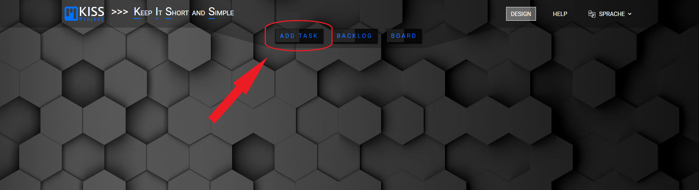
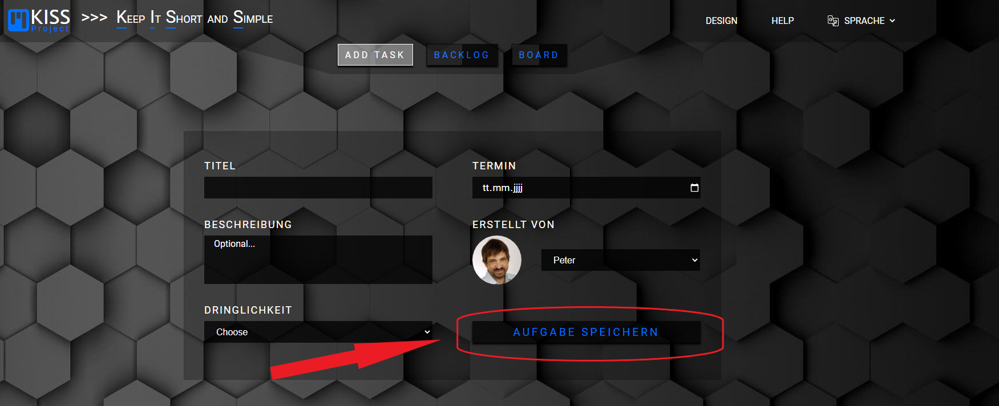
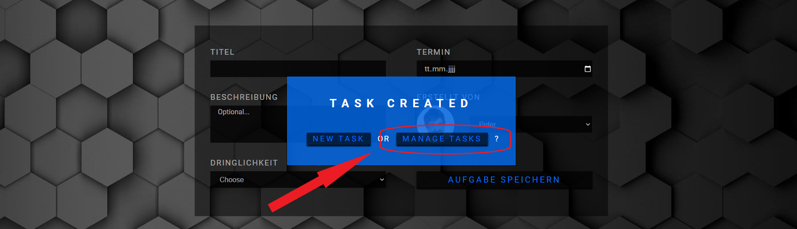
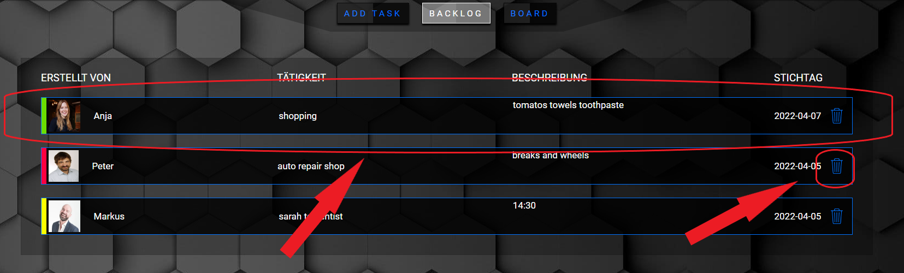
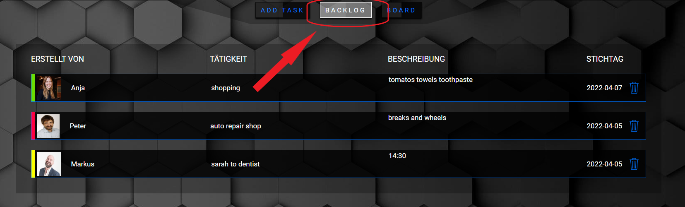

How does KISS-Project work?
1. Go to the "ADD TASK" section.
2. Fill in the empty input fields. Then click on the "CREATE TASK" button to create a new task.
3. Now comes a confirmation field where you can choose between create NEW TASK and MANAGE TASKS. If you now click on MANAGE TASKS you will be redirected to the BACKLOG section.
4. Now you are in the "BACKLOG" section. In this section you will see all the tasks you have created and not yet sent to the board. If you want you can send them to the board by clicking on the task itself. (Only hover over it and you get the information too). Or you can delte them when you click on the "delete" icon.
5. When youre ready you can go to the BOARD section to see all the tasks you have created and sent to the board.
In this section you can click on each of the tasks to see them in more detail, as well as change their status (ToDo, In Progress, Testing, Done) by using the application drag and drop function.